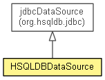

- java.lang.Object
-
- org.hsqldb.jdbc.JDBCCommonDataSource
-
- org.hsqldb.jdbc.JDBCDataSource
-
- org.eclipse.net4j.db.hsqldb.HSQLDBDataSource
-
-
Field Summary
-
Fields inherited from class org.hsqldb.jdbc.JDBCCommonDataSource
connectionProps, dataSourceName, description, loginTimeout, logWriter, networkProtocol, password, serverName, url, user
-
Method Summary
-
Methods inherited from class org.hsqldb.jdbc.JDBCDataSource
getConnection, getConnection, getReference, isWrapperFor, unwrap
-
Methods inherited from class org.hsqldb.jdbc.JDBCCommonDataSource
getDatabase, getDatabaseName, getDataSourceName, getDescription, getLoginTimeout, getLogWriter, getNetworkProtocol, getParentLogger, getServerName, getUrl, getUser, setDatabase, setDatabaseName, setLoginTimeout, setLogWriter, setPassword, setProperties, setUrl, setUser
Copyright (c) 2011-2014 Eike Stepper (Berlin, Germany) and others.